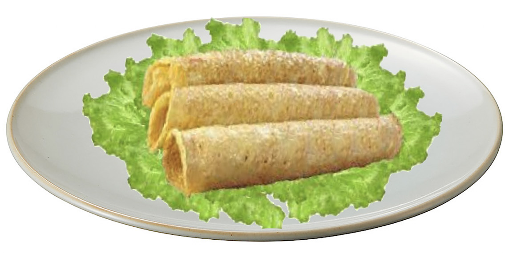

Food and Human Nutrition
Form Two
6. Pour sufficient batter into the frying pan and quickly swish it around to cover the whole bottom area of the frying pan. Cook until the underside of the pancake becomes brownish. Make sure that you control the heat to prevent burning the pancake.
7. Turnover the pancake with a food turner and cook the other side of the pancake until it turns brown. You can spread some little oil on top of the pancake after turning it. Repeat turning the pancake until the desired brownish colour is attained.
8. Remove the pancake from the frying pan and put it on a plate. Put a little oil again in the frying pan. Then, continue with the cooking process until all the batter mixture is used up.
9. Serve the pancakes on a bed of salad as shown in Figure 2.11.

Figure 2.11: Pancakes
Activity 2.14
Preparation of pancake
(i) Prepare pancakes to be consumed by five people for breakfast.
(ii) Assess the quality of the prepared dish in terms of appearance, taste and texture.
(iii) Suggest the suitable accompaniments for the dish.